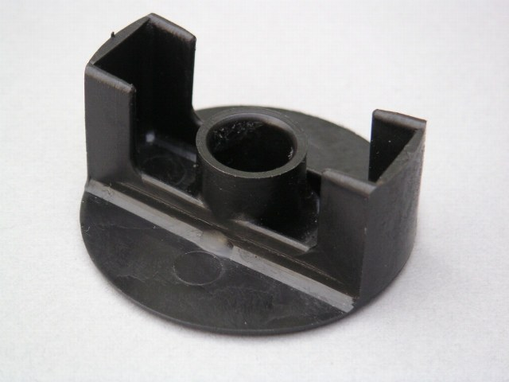
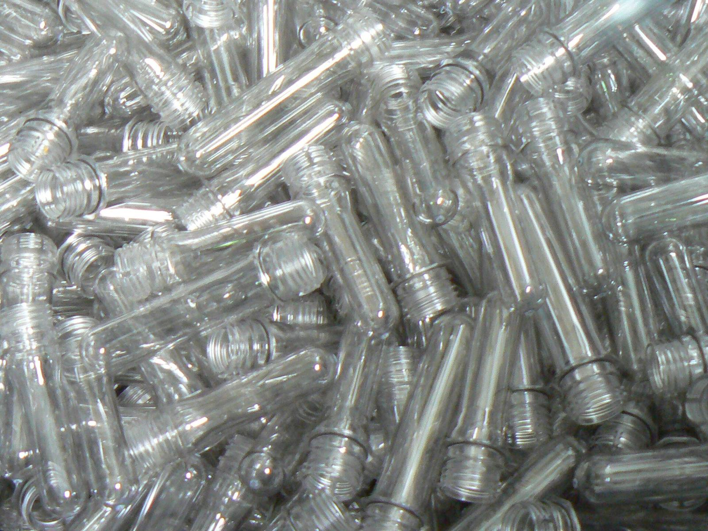

模具与注塑件
五类模具与注塑件以料号与模号区分；规格逐项对照，选型条件写在同类目旁。
多腔热流道模具
| 型腔数 | 1–32 腔 |
|---|---|
| 模具尺寸 | 最大 900×1200 mm |
| 模具钢材 | S136/H13/NAK80 |
| 热流道 | 开放式/针阀式 |
| 成型周期 | 12–40 s |
| 模具寿命 | 50–100 万模次 |
| 型腔公差 | ±0.01 mm |
应用与选型
用于批量小件；提供年需求、制品重量和允许周期，型腔数按机台与排产确认。
双色注塑模具
| 成型方式 | 旋转式/机械手转移 |
|---|---|
| 适配机型 | 双色注塑机 120–650 t |
| 材料组合 | PC+TPU/PP+TPE/ABS+PC |
| 包胶厚度 | ≥0.8 mm |
| 配合公差 | ±0.02 mm |
| 模具寿命 | 30–50 万模次 |
应用与选型
用于硬胶主体加软胶握持面；先核对两种材料粘接和机台转盘接口，包胶厚度不足 0.8 mm 的方案另评。
精密结构注塑件
| 适用材料 | PA66+GF/POM/PBT/PC |
|---|---|
| 单件重量 | 0.5–350 g |
| 尺寸公差 | ±0.02 mm |
| 平面度 | ≤0.05 mm |
| 表面处理 | 咬花/喷砂/高光 |
| 成型机台 | 90–800 t |
应用与选型
用于家电内部支架和工具壳体；图纸标明基准、公差及受力位置，材料和玻纤比例在开模前确认。

透明光学注塑件
| 适用材料 | PMMA/PC/COC |
|---|---|
| 透光率（PMMA 2 mm 厚试样） | ≥90% |
| 壁厚 | 0.8–6 mm |
| 表面粗糙度 | Ra ≤0.02 μm |
| 成型环境 | 十万级洁净车间 |
| 尺寸公差 | ±0.03 mm |
应用与选型
用于照明透镜和灯罩；核对光路、壁厚与外观样板，≥90% 透光率对应 PMMA 2 mm 厚试样，其他材料指标待补充。

金属嵌件注塑件
| 嵌件类型 | 铜螺母/冲压端子/不锈钢轴 |
|---|---|
| 嵌件放置 | 机械手/人工 |
| 适用材料 | PBT+GF/PA6/LCP |
| 定位精度 | ±0.05 mm |
| 尺寸公差 | ±0.03 mm |
| 成型机台 | 立式 55–250 t |
应用与选型
用于连接器和带螺母结构件；买方确认嵌件尺寸、表面状态及拉拔要求，拉拔力数值待补充。
应用行业
- 家电外壳与结构件
- 汽车内饰件与连接器
- 医疗器械耗材外壳
- 照明透镜与灯罩
- 电动工具壳体
订单与交付
- MOQ
- 注塑件 5000 件起；模具单套起接。
- 交期
- 单腔模具在图纸确认后约 25–35 天；多腔热流道和双色模具在图纸确认后约 40–55 天；批量注塑件在模具确认后 15–20 天。
- 包装
- 模具清洁防锈后锁定活动部件，木箱固定并附模具编号与维护清单；注塑件按签样包装分袋，外箱标注料号、模号、批次和数量。透明件用隔离包装避免摩擦，具体包装图先确认。
选型需交资料
- STEP/IGES 3D 图
- 带基准和公差的 2D 图
- 材料牌号
- 外观样板
- 年需求与首批数量
- 有嵌件时另需嵌件图和来料安排
模具的机台接口、所有权与出运目的地需注明。